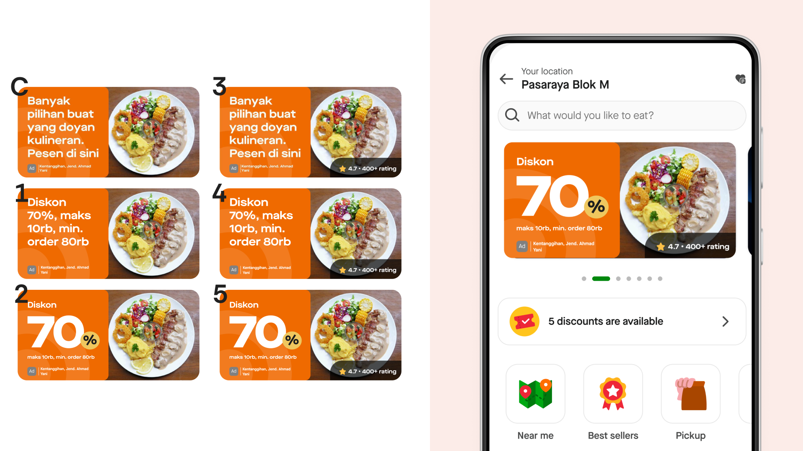
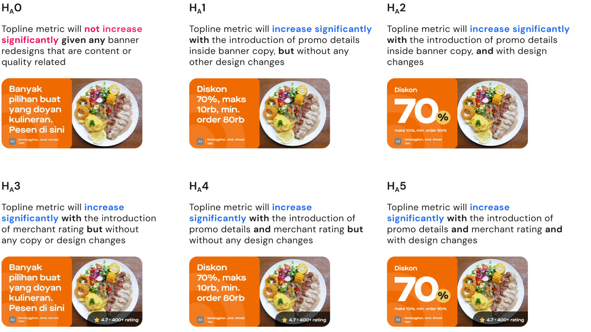
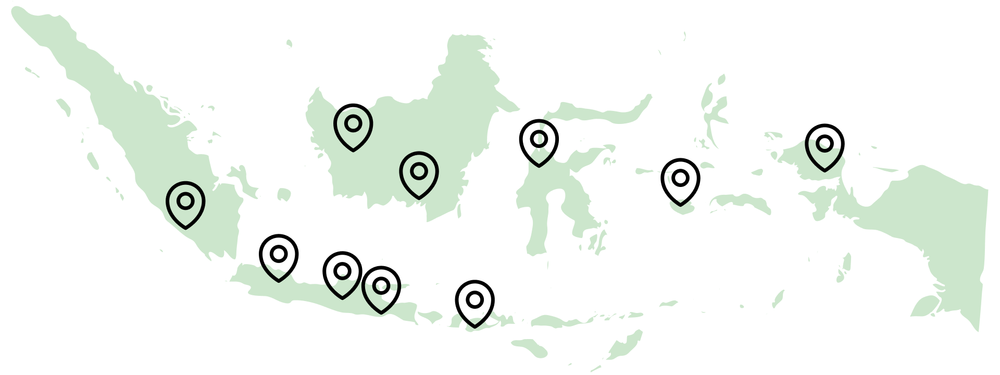
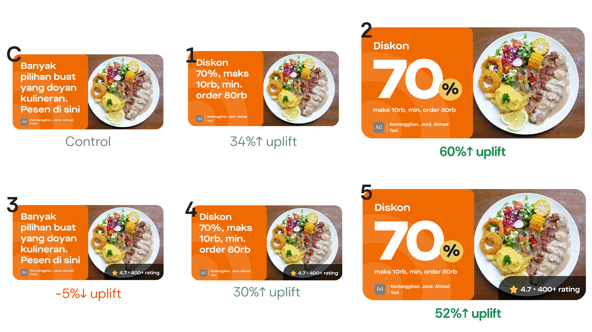
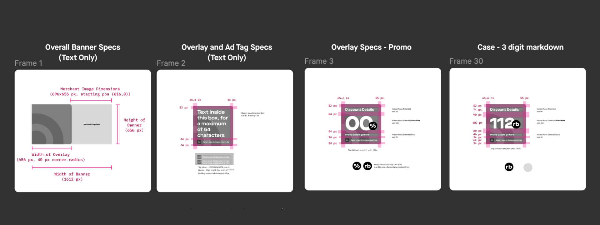
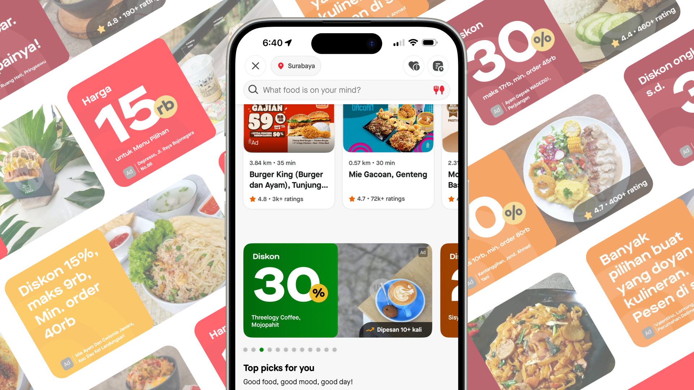

Banner CTR experiment: 60% uplift
Using multivariate testing, automation, and code-based methods to improve ad performance for GoFood merchants
At Gojek I designed consumer advertising across Southeast Asia's super-app ecosystem, at a scale of ~30 million monthly active users across Indonesia and Vietnam, balancing merchant ROI, user experience, and rapid experimentation. This case study covers a banner CTR experiment for GoFood's self-serve merchants. It sits alongside my work on the ads design system and the Masthead premium ad format.

What's the problem?
We make about $100k+ USD per month from thousands of self-serve merchants who run banner ads on GoFood.
Self-serve banners creation (legacy process) were inflexible PNGs super-imposed on top of each other that merchants would choose. We'd noticed less customer engagement with self-serve banners vs. sales-assisted banners (more customizable). As a result, merchants would churn and not renew.

- ~1-2% — Sales Assisted CTR
- 0.05-0.1% — Self Serve CTR
Why didn't users click on banner ads?
Comparing sales-assisted vs self-serve banners, we identified key differences:
- Image quality seen as proxy for food quality - Self-serve banners had lower quality images
- Promo information - Users look at details on discounts/cashback etc
- Credibility - Users look for signals like reviews, ratings, to make a decision to order something new

User behaviour creates a vicious cycle
- Discovery stage: User views self-serve banner on the GoFood app
- Consideration stage: Is the banner relevant to what I want to eat? Does it contain information I care about? (promo/discount/rating)
- Decision stage: User ignores banner due to lack of relevance (targeting/algo issue) or lack of information (design issue)
- Low return on ad spend: Merchant spends money to run the banner but doesn't see a return. Merchant pulls the ad.
- Vicious cycle: Fewer merchants run ads, meaning fewer users are shown banners on the app and banners are less relevant
User research
Card sorting with customer panel

We wanted to get a prioritisation of what customers cared about (carried out in collaboration with UXR team). Key findings:
- Promo details were the #1 factor in click decisions
- Ratings/reviews provided social proof and credibility
- Image quality was seen as a proxy for food quality
- Restaurant name helped with recognition and trust
Exploring solutions and building the case
I worked with PM and the data team to brainstorm and explore numerous ideas to solve the low CTR problem. This included competitor research with Grab and Foodpanda to understand what was working in the market.
The vision: Contextual & personalized banners

My hypothesis was that by making banners contextual to user preferences and behaviour, we could significantly improve ad relevance and CTR. The ideal future state would include:
- Personalized SKU discounts - Banners showing discounts for categories users have ordered before
- Social proof - User-generated content and popularity signals ("2,000+ people ordered this today") to tap into the hive mind effect
- Behavioral targeting - Reducing friction in decision-making by showing relevant offers at the right time
"This was the idealized vision - what we could eventually achieve. Some ideas required tech and data infrastructure we didn't have yet. But I presented them as possibilities to plant seeds for the future, while focusing the immediate experiment on what we could realistically build and test."
After presenting these ideas to product and design leadership, we got the green light to move forward. With bandwidth and alignment secured, we scoped an experiment we could execute immediately while keeping the longer-term vision in mind.

We defined our hypothesis and end state
Hypothesis: If our banners contain the data points that are relevant to our customers' purchase intent then we will see an increase in click through rate on banners

Data points chosen
- Discount amount details - Showing specific promo values
- Restaurant rating - Adding social proof and credibility
- Design changes to emphasise promo - Visual hierarchy improvements
Turning qual insight into measurable metrics
Key questions we had to answer:
- How do you turn qual insight into a measurable metric?
- How do you draw a relationship between a point of information on the banner, versus the actual user behaviour that it causes?
Multivariate testing approach chosen: Same core mechanism as A/B testing, but compares a higher number of variables, and reveals more information about how these variables interact with one another.
Experiment treatments
Worked with PM, Data Science and engineering to define experiment hypothesis and parameters. We designed 6 treatments to test different combinations:

How do we put this into production?
For the experiment to be statistically significant, there must be a minimum number of daily users it had to reach.
Scale: Total: 6 banners × 2 merchants × 10 cities = 120 banners

Process
- Worked with PM and Biz team to get data points
- Created a spreadsheet and broke down image parameters (merchant name, rating, image URL) for each merchant × treatment
- Evaluated and used a plugin to auto-generate the banners
- Transformed the data into a CSV that was parse-able by the plugin to generate the banners
This automation approach saved weeks of manual design work and ensured consistency across all 120 banner variations.
Experiment results
Treatment 2 and Treatment 5 emerged as winners of the experiment. This meant that our hypothesis of showcasing discount amount details and information hierarchy improvements were validated.

Counter-intuitive insight
We had some hypotheses around this. Rating affected CTR only when the rating was good. This led to some ethical questions:
- Do we show rating if rating is low?
- Do we optimise for click through rate or user satisfaction?
- What are other data points we can show that provide social proof and credibility apart from rating?
New challenge - developer collaboration
Prior merchant ad solution was built as an MVP with limited functionality. Now the solution had to change to include additional data points as per experiment results.
It was becoming a bit complex to communicate everything as a PRD. So I thought: what can I do as a designer to shorten this process?
Solution: code-based proof of concept
I created a code-based proof of concept for the engineering team, using internal APIs to demonstrate how the component could work and collaborated as they built it in terms of high-fidelity specs and visual QA.

Impact
- 60% — Uplift in ads CTR
- 100% — Scaled to all merchants
- 92% — YoY increase in ad revenue
- Project and methods received great feedback from cross-functional peers
- Presented case study at design all hands to team & leadership
- New ad format scaled up to 100% merchants and customers
- Increased merchant signup and retention contributed to 92% increase in advertising revenue in 2024
Social proof beyond the star rating
Rating wasn't the only signal that worked. We kept iterating and found other data points that carried social proof just as well — "Ordered x times by people near you," for instance, built credibility and drove engagement without leaning on a star rating at all. Proximity and popularity turned out to be their own form of trust.

Learnings and next steps
"Tools complement, not substitute well-defined hypothesis and rigorous thinking. In setting up an experiment, you need to account for not just what you want to find, but how you will go about finding it. The work is never done."
Addressing patchy merchant image quality
Even though we increased merchant participation, we created a new problem: image quality was still inconsistent. How do we curate at scale? We still haven't cracked this.
We had some vision for how to solve it. We realized we needed to give merchants feedback in their campaign reports - showing them when poor image quality was leading to bad engagement. That became the next problem we were supposed to solve... but it hasn't been solved since I left Gojek!
Creating a better framework for personalisation & performance

My vision was for banner ads to no longer be PNGs but UI overlays on high-quality merchant images, where copy could be tailored to user personas:
- Social proof for people who need validation
- Discounts for discount hunters
- Ratings for foodies
It would be dynamic and more in line with state-of-the-art advertising that Meta and Google could offer. Of course, we couldn't get there during my time, but that's the vision I drove in the GoFood redesign - planting seeds for the future.